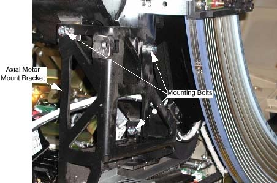

Proprietary to General Electric
Direction 5181166-800, Rev# 7
BrightSpeed Select Service Methods Adv
Proprietary to General Electric |
| Last Revised on: | 18 March 2008 |
Axial drive system is noisy during rotation. The axial drive belt should run/track in the center of the axial motor sprocket. A belt that is not tracking properly can cause excessive noise.
The most likely cause is that the axial motor mount bracket is skewed in relation to the main bearing.
See Illustration 1. The axial motor mount bracket is attached to the system with three (3) bolts. The inside diameter of the bolt holes on the motor mount bracket is slightly larger than the diameter of the bolts resulting in enough play to cause tracking problems.
Illustration 1: Axial Motor Mount Bracket Bolts

If the belt is tracking to the rear of the motor drive gear, raising or “pulling up” on the front of the axial drive assembly will correct the skew and eliminate the noise.
If the belt is tracking towards the front of the motor drive gear, lowering or “pushing down” the front of the axial drive assembly will correct the skew and eliminate the noise.
Turn the Gantry by hand until it passes through the Axial Home Flag. Verify the following while referring to Table 1:
CH A and CH B LEDs toggle.
CH C LED toggles on and off once while home LED is illuminated.
Table 1: Board LEDS
| CH A LED | CH B LED | CH C LED | Home Flag LED | |
|---|---|---|---|---|
| Axial board | DS 1 | DS 2 | DS 3 | DS 5 |
| MSUB | DS 12 | DS 13 | DS 14 | DS 16 |
| TGPU | DS 14 | DS 15 | DS 16 | DS 17 |
Turn the Gantry by hand until the Axial Home Flag approaches the sensor. Verify:
Toggle the axial drive enable switch on the Service Switch Panel. Listen to the brake; it should energize and de-energize.
| NOTE: | The brake may not toggle if the system underwent a hardware reset since the last time you turned on gantry AC power. If the brake doesn’t toggle, use the 120 VAC enable switch to turn gantry 120 VAC power off, then on. Then toggle the axial drive enable switch. You should now hear the brake as it energizes and de-energizes. |
Make sure:
When you turn off the axial drive enable, the switch pilot light turns off and the brake releases. (You can easily rotate the Gantry by hand.)
When you turn on the axial drive enable switch, the switch pilot light turns ON and the brake energizes.
| Always turn ON the 120 VAC before the HVDC. Turning ON HVDC power before 120 VAC power can result in equipment damage. | |
Turn on all three switches on the Service Switch Panel.
Table 2: Axial Dynamic Brake Fuses
| FUSE# | VALUE | DESCRIPTION |
|---|---|---|
| F1 | 20A, 700Vdc | Not Used |
| F2 | 20A, 700Vdc | Not Used |
| F3 | 3A, 250Vdc | Not Used |
| F4 | 8A, 350VAC Slo-Blo | Not Used |
| F5 | 8A, 350VAC Slo-Blo | Not Used |
| A4 F1 | 10A, 700Vdc | DCIN+ to Chopper Resistor Assembly |
Perform gantry rotational testing using Axial Functional Diagnostic. Service Desktop>Diagnostics>Axial Control>Axial Functional.
Perform one (1) pass each "Open Loop Rotation" at each scan speed. Verify no errors.
Perform one (1) pass each "Closed Loop Rotation" at each scan speed. Verify no errors.
Perform several passes of "Goto Position" choosing different angles. Verify no errors.